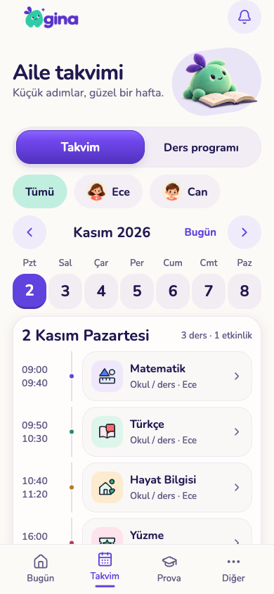
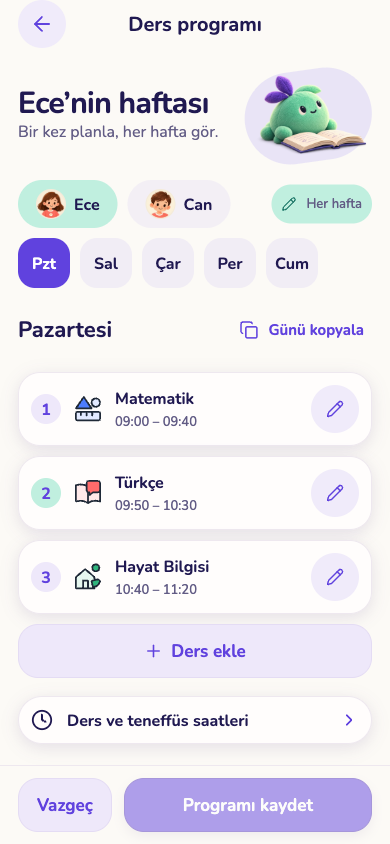
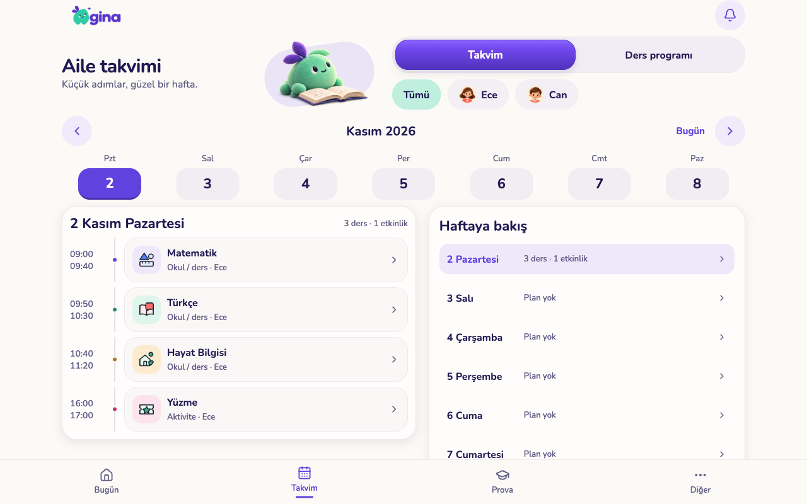
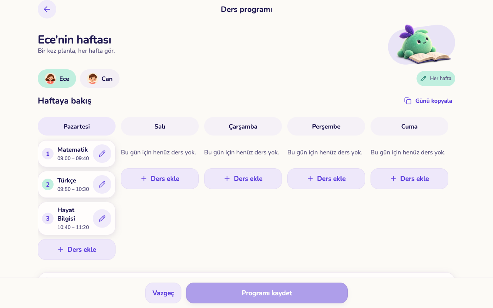

Takvim ve haftalık ders programı
Uygulamanın çalışan ekranları, örnek aile verileriyle. Telefon 390×844, tablet 1280×800. Bunlar yeniden çizilmiş maketler değil; uygulamanın web sürümünden alınan ekran görüntüleri. iOS simülatör kanıtları aşağıda ayrıca bulunuyor.
Takvim · Telefon
Ders programı · Telefon
Takvim · Tablet

Ders programı · Tablet

iOS simülatör kontrolleri
iPhone takvim · iPhone ders programı · iPad ders programı
iOS geliştirme sürümündeki gri dişli test aracına aittir; yayın arayüzünün parçası değildir. Simülatörler de yalnız ayrı örnek veri sunucusuna bağlandı.
Onaylı görsel referans

Sonraki ekran · Görevler önerisi
Bu bölüm tasarım önerisidir; henüz onaylanmadı ve uygulama koduna taşınmadı.